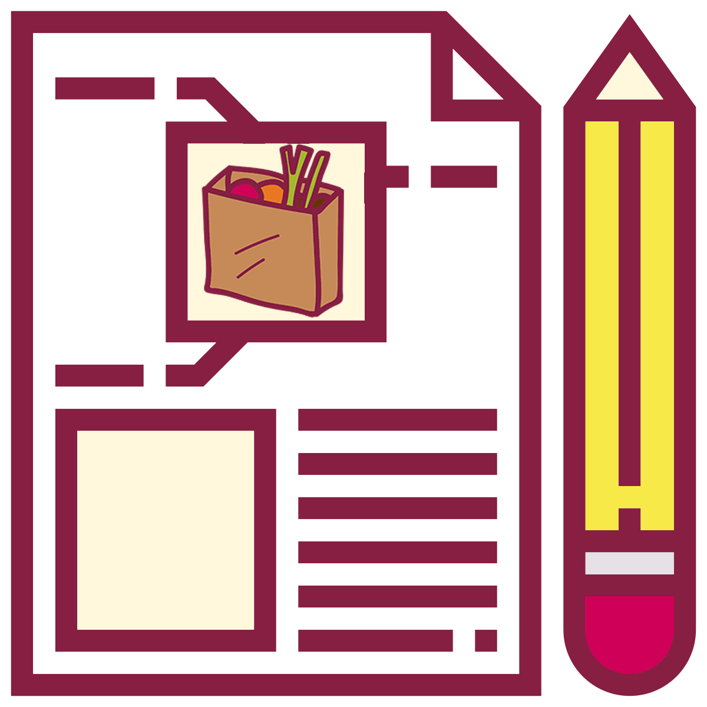

In this course, you will compose a series of documents (labeled as Full Drafts) that focus on food- related issues. This sequence of projects will be your focus for the term.
Analyze Food or Beverage Packaging
 You will analyze the packaging and labels for a food or beverage (e.g., a cereal box, can of soup, wine bottle) to see how it works as a technical document.
You will analyze the packaging and labels for a food or beverage (e.g., a cereal box, can of soup, wine bottle) to see how it works as a technical document.
You will record the details you find in a table that lists the characteristics of a technical document, measures of excellence in technical documents, and principles for ethical communication. Finally, you will predict the likely characteristics of the audience for this technical writing, using the data you have recorded as supporting evidence.
Pitch Your Recommendation Report Topic
 You will pitch your recommendation topic in a video presentation that describes your topic. Your video should be 3 to 5 minutes long and should show either yourself talking to the audience or slides that illustrate your story.
You will pitch your recommendation topic in a video presentation that describes your topic. Your video should be 3 to 5 minutes long and should show either yourself talking to the audience or slides that illustrate your story.
You will explain your topic, why you chose it, and why your readers will be interested. The presentation should also include details on your planned research on the topic and be accompanied by a transcript.
Write a Technical Description
 You will choose an object or process related to food and compose a technical description in the form of a fact or info sheet. Objects can include tools (e.g., wok, mortar and pestle), ingredients (e.g., ginger, hops), and food items (e.g., uramaki, Chicken Kyiv). Processes can include julienning, fermenting, and fertilizing.
You will choose an object or process related to food and compose a technical description in the form of a fact or info sheet. Objects can include tools (e.g., wok, mortar and pestle), ingredients (e.g., ginger, hops), and food items (e.g., uramaki, Chicken Kyiv). Processes can include julienning, fermenting, and fertilizing.
You will include specific details and relevant illustrations that describe the item or process is, how it works, and its principal parts or steps.
Compose Instructions
You will create instructions for how to prepare, grow, select, or serve food. Your project can be a recipe, but you are not limited to recipes. You can also focus on topics such as how to pair a beer with a meal, how to harvest strawberries, how to choose the fresh produce, or how to season a cast iron skillet.
You will write numbered steps, using action verbs in the imperative mood. If used in the instructions, you can link to technical descriptions of objects or processes. Your project will include photos or illustrations demonstrating the steps.
Make Your Recommendation
You will identify a food-related challenge that Virginia Tech students face, investigate solutions, and make a recommendation to your readers. You will have a range of projects to focus on, including recommendations on decreasing grocery bills, eating vegan on campus, optimizing food truck access, and addressing food insecurity.
You will include customary sections (e.g., intro, methods, results, conclusions, and recommendations), along with front and back matter. Your report will be 10–15 pages long.